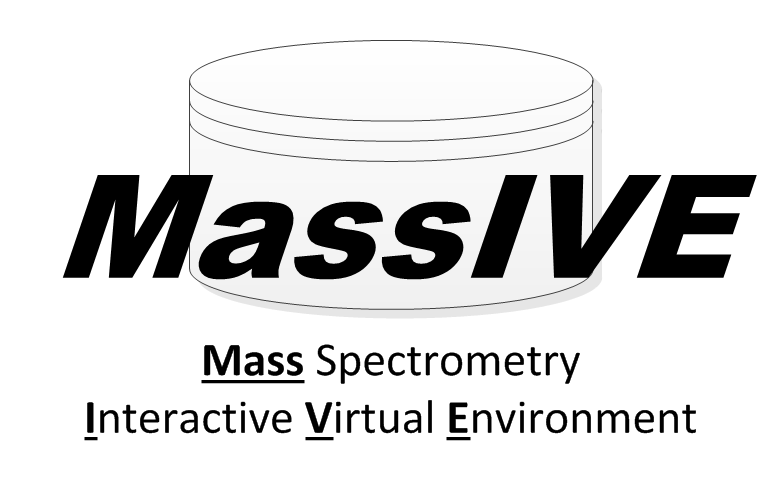

MassIVE Documentation

MassIVE is a worldwide mass spectrometry data repository integrated into a flexible, scalable, user-friendly framework offering a diverse set of data analysis algorithms.
The public availability of mass spectrometry data is increasingly recognized as indispensable for the future of computational mass spectrometry and, consequently, for the collective ability of the proteomics community to progress towards efficiently reutilizing the billions of spectra already acquired and the many millions more being generated on a daily basis. But despite the pioneering efforts of the Tranche/ProteomeCommons system and the essential integration services under development by the ProteomeXchange consortium, there is still a pressing need for data repositories designed not only for reliable sharing of primary data but also offering user-friendly tools for advanced data analysis and visualization. MassIVE is a new mass spectrometry data repository designed to store, browse, redistribute, re-analyze and integrate all publicly available mass spectrometry data.
Since its inception, MassIVE has imported multiple Terabytes of mass spectrometry data in over 6,000 datasets from the now-extinct Tranche repository which are now available as MassIVE datasets and can be searched using the original Tranche hash strings. In addition, new datasets submissions to MassIVE already more than doubled the volume of data recovered from Tranche and continue to increase the volume and diversity of mass spectrometry data available to the proteomics community.
Logo License
Feel free to use the MassIVE logos for your presentations. The following logos are licensed as CC BY.